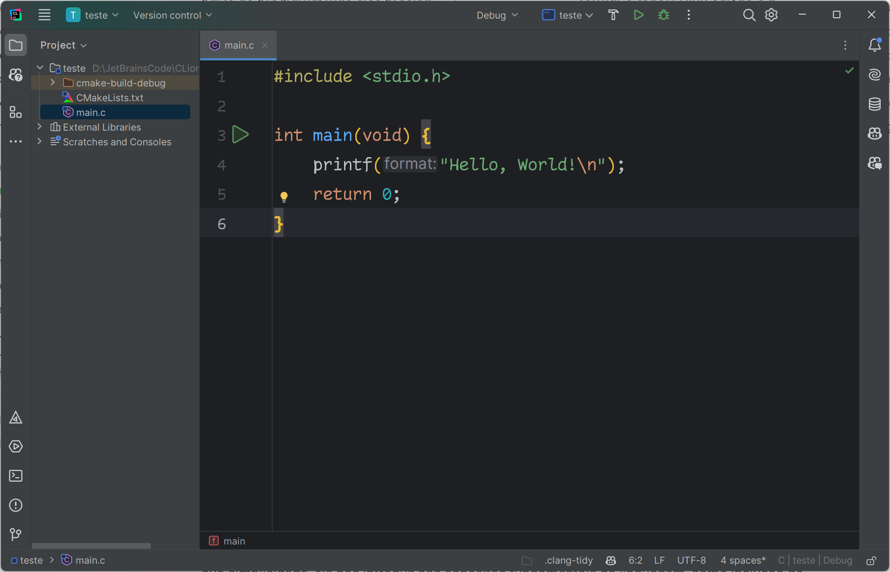

A criação de um programa em C¶
Quando escrevemos um programa em C, o código que criamos, geralmente salvo em arquivos com extensão .c (os arquivos fonte), não pode ser executado diretamente pelo computador.
A razão disso é porque o processador só entende instruções em linguagem de máquina, um código binário bem diferente das palavras e comandos que usamos em C, como printf() ou int. O processo de compilação é justamente o que transforma esse código legível por humanos em algo que o computador pode executar.
Para transformar arquivos com o código fonte em um programa que possa ser executado pelo computador, precisamos passar por quatro etapas: edição do código fonte, pré-processamento, compilação e montagem, e link-edição. O programa executável só existe depois da última etapa concluída.
graph TD
Fonte1 --> Preprocessamento1 --> Processado1
Fonte2 --> Preprocessamento2 --> Processado2
BibEstat1 --> Compilador1
BibEstat2 --> Compilador1
Processado1 --> Compilador1 --> Obj1
Processado2 --> Compilador2
BibEstat1 --> Compilador2 --> Obj2
Obj2 --> Link
Obj1 --> Link --> Exec
Fonte1@{ shape: doc, label: "**Código fonte**<br />(.c, .h)" }
Fonte2@{ shape: doc, label: "**Código fonte**<br />(.c, .h)" }
Preprocessamento1@{ shape: process, label: "Pré-processamento" }
Preprocessamento2@{ shape: process, label: "Pré-processamento" }
Processado1@{ shape: doc, label: "**Código pré-processado**<br />(.i)" }
Processado2@{ shape: doc, label: "**Código pré-processado**<br />(.i)" }
BibEstat1@{ shape: lin-doc, label: "**Biblioteca B1**<br />(.so)" }
BibEstat2@{ shape: lin-doc, label: "**Biblioteca B2**<br />(.so)" }
Compilador1@{shape: process, label: "Compilação e montagem" }
Compilador2@{shape: process, label: "Compilação e montagem" }
Obj1@{ shape: doc, label: "**Código objeto**<br />(.o)" }
Obj2@{ shape: doc, label: "**Código objeto**<br />(.o)" }
Link@{ shape: process, label: "Link-edição" }
Exec@{ shape: doc, label: "**Programa executável**<br />(.exe)" }Vamos discutir de maneira simplificada cada uma delas.
Edição do código fonte¶
Analisando friamente, podemos utilizar qualquer editor de textos para escrever um programa em linguagem C (ou qualquer outra linguagem, como Python, Java ou TypeScript). O problema é que a nossa produtividade (linhas de código que escrevemos pelo esforço dispendido) não vai ser boa.
Um editor de texto está preparado para editar qualquer tipo de texto. Ele não foi pensando para escrever programas, então faltam algumas coisas importantes, como por exemplo a integração com um compilador, um ambiente para executar o programa, ferramentas para auxiliar a resolver erros que aparecem durante a execução ou compilação do programa. O ideal é que façamos o desenvolvimento dentro de um IDE.
Um Ambiente Integrado de Desenvolvimento (IDE, do inglês Integrated Development Environment) é um software que reúne diversas ferramentas essenciais para a programação em um único local, facilitando o desenvolvimento de aplicações. Ele geralmente inclui um editor de código, um compilador ou interpretador, um depurador e outros recursos que auxiliam na escrita, teste e manutenção do código. Eles surgiram para simplificar o processo de programação, que anteriormente exigia que os desenvolvedores escrevessem código em um editor de texto, salvassem o arquivo, acionassem o compilador separadamente e depois retornassem ao editor para corrigir eventuais erros.
Uma das principais características de uma IDE é o suporte à edição inteligente de código. Recursos como realce de sintaxe, autocompletar e sugestões automáticas ajudam a evitar erros e tornam a escrita do código mais eficiente. Além disso, muitas IDEs oferecem integração com sistemas de controle de versão, permitindo que os desenvolvedores trabalhem de forma colaborativa em projetos sem perder o controle das alterações. Algumas também possibilitam a utilização de bibliotecas e frameworks externos, simplificando o desenvolvimento de aplicações mais complexas. Para iniciantes, os IDEs também oferecem uma curva de aprendizado mais suave, com recursos que auxiliam na compreensão da sintaxe e na identificação de erros comuns.

Tela principal da IDE CLion (JetBrains)
Pré-processamento¶
graph LR
Fonte1 --> Preprocessamento1 --> Processado1
Fonte1@{ shape: doc, label: "**Código fonte**<br />(.c, .h)" }
Preprocessamento1@{ shape: process, label: "Pré-processamento" }
Processado1@{ shape: doc, label: "**Código pré-processado**<br />(.i)" }A segunda etapa é o pré-processamento, feita pelo pré-processador, um programa que "prepara" o código antes da compilação propriamente dita.
Quando escrevemos um programa em C, usamos diretivas que começam com #. Essas diretivas são instruções para o pré-processador.
Durante esta fase:
- As macros são expandidas;
- Os arquivos de cabeçalho (.h) são incluídos no arquivo-fonte;
- Espaços desnecessários são removidos, e;
- Comentários são eliminados
O resultado é uma versão do código fonte "limpa". Este arquivo, normalmente com extensão .i, contém todo o código-fonte original mais o conteúdo dos arquivos incluídos e as macros expandidas, gerando um arquivo significativamente maior que o original.
As principais diretivas de pré-compilação são:
-
#include: substituem declarações de inclusão de arquivos, como arquivos de cabeçalho (.h). Isso permite que funções e definições externas sejam incorporadas ao código. Por exemplo, ao escrever#include <stdio.h>, estamos pedindo para incluir o conteúdo do arquivo de cabeçalhostdio.h(que contém declarações de funções comoprintf()) no nosso código; -
#define: realizam substituições de macros, que podem ser valores constantes ou pequenas funções inline. Se usarmos, por exemplo,#define PI 3.14, o pré-processador substituirá todas as ocorrências dePIno código por3.14. Ao fazermos#define QUADRADO(x) ((x) * (x))o pré-processador substitui todas as ocorrências deQUADRADO(valor)pela expressão(valor * valor)antes da compilação. A diretiva pode ser usada também apenas para a definição de um símbolo (#define DEBUG, por exemplo) que pode ter a existência verificada (#ifdef DEBUG, por exemplo); -
#undef: remove faz com que o símbolo ou macro seja apagada da tabela interna. A partir deste ponto, o compilador não conhece mais esta macro; -
#ifdef,#ifndefe outras relacionadas: permitem compilar trechos específicos do código com base em definições previamente estabelecidas. Isso é extremamente útil quando estamos escrevendo um programa que deve rodar em mais de uma arquitetura e, dependendo da arquitetura vai utilizar uma biblioteca ou outra, por exemplo.
| Exemplos de uso de diretivas de compilação | |
|---|---|
Compilação e montagem¶
graph LR
BibEstat1 --> Compilador1
BibEstat2 --> Compilador1
Processado1 --> Compilador1 --> Obj1
Processado1@{ shape: doc, label: "**Código pré-processado**<br />(.i)" }
BibEstat1@{ shape: lin-doc, label: "**Biblioteca B1**<br />(.so)" }
BibEstat2@{ shape: lin-doc, label: "**Biblioteca B2**<br />(.so)" }
Compilador1@{shape: process, label: "Compilação e montagem" }
Obj1@{ shape: doc, label: "**Código objeto**<br />(.o)" }Nesta etapa, o compilador realiza a análise sintática e semântica do código pré-processado. Ele verifica se o código está escrito corretamente, seguindo as regras da linguagem C, como parênteses não fechados, falta de ponto e vírgula, entre outros erros sintáticos.
Se não houver erros, o compilador traduz o código para a linguagem de montagem da máquina (linguagem assembly), que é uma representação de baixo nível mais próxima da linguagem de máquina. O resultado é, normalmente, um arquivo com extensão .s
O código em assembly resultante vai conter instruções específicas para a arquitetura do processador (como x86 ou ARM) que será utilizado.
A etapa de montagem transforma o código assembly em código-objeto, que está em linguagem de máquina, porém ainda não está pronto para ser executado. O código binário resultante ainda não pode ser executado porque pode depender de funções ou variáveis definidas em outros lugares (como em outro arquivo .c ou em bibliotecas externas). Cada arquivo .c gera seu próprio arquivo objeto, de extensão .o, nessa etapa.
A parte do compilador que faz essa conversão é o montador, ou assembler.
Link-edição¶
graph LR
Obj1 --> Link --> Exec
Obj1@{ shape: doc, label: "**Código objeto**<br />(.o)" }
Link@{ shape: process, label: "Link-edição" }
Exec@{ shape: doc, label: "**Programa executável**<br />(.exe)" }Imagine que os arquivos objeto .o são como peças de um quebra-cabeça: cada um tem uma parte do programa, mas eles precisam ser conectados para formar o todo. A link-edição é a etapa final do processo, onde o linkeditor (linker) combina todos os arquivos-objeto gerados e as bibliotecas necessárias em um único arquivo executável. O linker realiza as seguintes tarefas:
- Resolve referências entre os diferentes módulos do programa, garantindo que todas as referências a funções e variáveis estejam devidamente definidas e resolvidas;
- Se o programa utiliza funções externas, como as da biblioteca padrão do C (
stdio.h,math.h), o linker adiciona os arquivos correspondentes ao executável final, e; - Gera o arquivo executável final
O arquivo executável gerado pode ser executado diretamente pelo sistema operacional.
Um programa em C mínimo¶
Um programa em C mínimo para escrever "Olá, mundo!" na tela pode ser o seguinte
Este programa é um exemplo clássico que foi popularizado pelo livro "The C Programming Language", escrito por Brian Kernighan e Dennis Ritchie, os criadores da linguagem C. Através de sua simplicidade, ele nos introduz aos conceitos fundamentais da linguagem, como inclusão de cabeçalhos, declaração de funções, blocos de código e operações de entrada e saída.
A primeira linha, #include <stdio.h>, como já vimos, é uma diretiva de pré-processador. Neste caso, #include instrui o pré-processador a inserir o conteúdo do arquivo especificado no local onde a diretiva se encontra. O arquivo <stdio.h> é um cabeçalho da biblioteca padrão de entrada e saída (Standard Input/Output Header). Os colchetes angulares (<>) indicam que o arquivo deve ser buscado nos diretórios padrão do sistema. Este cabeçalho contém declarações de funções essenciais para operações de entrada e saída, incluindo a função printf(), que utilizaremos para exibir a mensagem na tela.
A segunda linha é uma linha em branco, utilizada para melhorar a legibilidade do código. Embora não tenha impacto na execução do programa, ela serve para separar visualmente a seção de inclusão de cabeçalhos da definição da função principal.
A terceira linha, int main(void), define a função principal do programa, chamada main. Em C, a função main é especial, pois é o ponto de entrada obrigatório para qualquer programa. A palavra-chave int indica que a função retorna um valor inteiro, que representa o código de saída do programa. O nome main é fixo e não pode ser alterado. Os parênteses (void) indicam que a função não recebe nenhum parâmetro. Em C, void é utilizado para especificar explicitamente que não há parâmetros, garantindo maior clareza e segurança no código.
A quarta linha, {, abre o bloco de código (corpo) da função main. Em C, blocos de código são delimitados por chaves ({}), que agrupam um conjunto de instruções relacionadas.
A quinta linha, printf("Ola, mundo!\n");, é onde a mágica acontece. Aqui, chamamos a função printf(), que faz parte da biblioteca padrão e foi declarada no cabeçalho <stdio.h>. A função printf() exibe texto formatado na saída padrão, que geralmente é a tela do computador. A string literal "Ola, mundo!\n" é passada como argumento para a função. Uma string literal é uma sequência de caracteres delimitada por aspas duplas. O caractere especial \n é uma sequência de escape que representa uma nova linha, fazendo com que o cursor avance para a próxima linha após a exibição da mensagem. O ponto e vírgula (;) marca o fim de uma instrução em C, assim como um ponto final em uma frase.
A sexta e última linha, }, fecha o bloco de código da função main, marcando o fim da função principal.
É importante notar que este programa não possui uma instrução return explícita. No entanto, em C99 e versões posteriores, se a função main terminar sem uma instrução return, o compilador automaticamente insere return 0;, indicando que o programa foi executado com sucesso. Além disso, a função main pode ser declarada de outras formas válidas, como int main() ou int main(int argc, char *argv[]), que são utilizadas para receber argumentos da linha de comando.